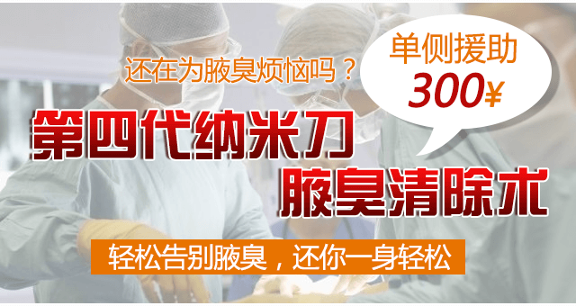
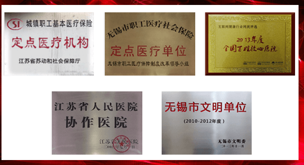
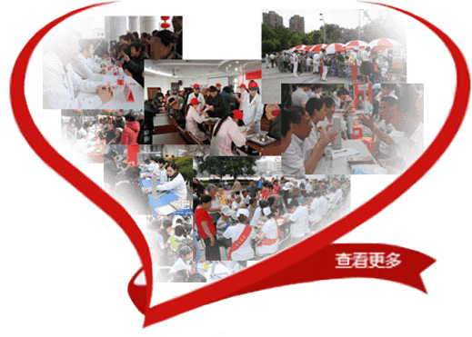

在中国
10%
发病率
男
68%女
男女比例
50%
父母一方
80%
父母双方
每10位成年人，就有1位患有腋臭。其中，女性的发病率明显大于男性腋臭的遗传几率极高。父母一方有腋臭，其子女50% 以上会遗传，父母均有腋臭，子女80% 会遗传。
- 你是否受下列症状困扰？
- □气味：用干净手帕和纸张用力擦抹腋毛部位，味道异常
- □色素：所传内衣咯吱窝部位发黄变色
- □家族史：祖辈、父母、兄弟姐妹及表亲有腋臭病史
- □腋毛：可见异常油腻或伴有比汗液蘸粘的液体，毛发霉变，分泌物粘连想摆脱困扰？ 问专家
- 不同程度腋臭看看您属于哪一种
强
进屋一会就能闻到味道中
脱下衣服，就能闻到味道弱
腋下夹上纱布，取下来的纱布有味轻
腋下夹上纱布，5-10分钟取下纱布有味- 如何治疗狐臭？在线问专家
献礼惠民
腋臭单侧援助300元
bromhidrosis discount
第四代纳米刀腋臭清除术利用吸脂术将大汗腺及绝大 多数毛根祛除，既不破坏腋部形态，又实现了不开刀祛腋 臭的愿望。同时，该技术成功解决了传统疗法治疗不彻底、 易复发的弊端，受到了腋臭患者高度赞誉。
纳米刀腋臭清除术五大优势
Five advantages
专家节假日不休、挂号费会诊费全免
Authoritative expert

很多医院缺乏医护人员，可能有时候患者就医时会觉得医生态度冷冰冰或者不耐 烦，导致很多关于疾病的疑问都得不到解答，手术后很多注意事项也不太清楚， 港务医院严格规定在患者治疗期间需有名医专家跟踪指导，服务更贴心，让就医 更放心！
迎中秋庆国庆 港务双节献礼“惠”动锡城
Qing Guoqing
众所周知，公立医院挂号难，很多患者去医院治病可能都 要排长队，等专家，花费了大量的时间和精力。因此，提前预 约就成了一个比较关注的问题。如今正值中秋国庆双节，港务 医院考虑到患者看病需求，特开通网络预约绿色通道，让锡城 市民轻松挂号就诊。
医院荣誉
公益的心


献礼惠民
网络预约免排队免挂号费
Gynecological examinat
*您的联系方式务必要填写准确，以便我院与您联系，以上信息都会严格保密*